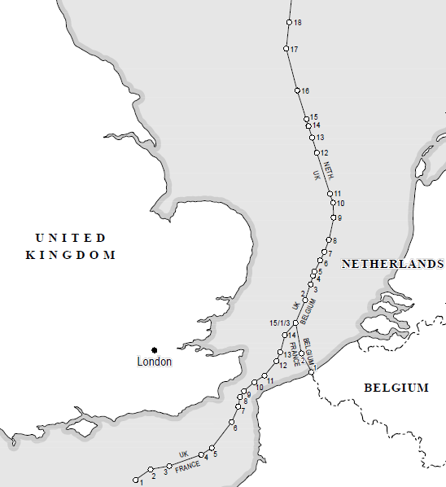

EqDistant Plugin How-To and guides
Welcome to EqDistant Plugin website!
EqDistant Plugin is a QGIS plugin to create an equidistance line. Equidistance line is a line which every point of the line is equidistant from the nearest points on input lines. Equidistance line is often used to determine maritime boundary between two states, where the input are the baselines of the bordering states.
Equidistance construction algorithm used by this plugin is based on steps of constructing equidistance line in Technical Aspects on the Law of the Sea (TALOS). Based on the geometry of the bordering baseline, there are two types of equidistance line. The first one is created from adjacent state, where the coasts of each state are adjacent to each other. The other one is opposite state equidistance line, where the coasts of each states are opposite to each other. The contstruction algorithm between these two types of equdistance line is slightly different, so you may want to keep in mind these types while creating the equidistance line.